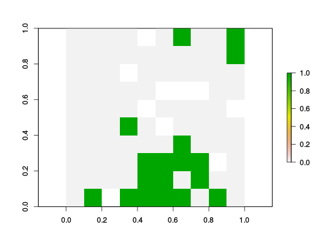

Create a Marxan conservation problem. Although users are encouraged to build and tailor conservation planning problems to suit their own needs, sometimes it is easier to just use a more familiar "canned" approach. To address this need, this function provides a convenient wrapper for generating and solving Marxan-style conservation problems. If users already have their conservation planning data in the Marxan input format, this function can be used to read such files and solve the Marxan problems using exact algorithm solvers.
marxan_problem(x, ...) # S3 method for default marxan_problem(x, features, targets, targets_type = c("relative", "absolute"), locked_in = waiver(), locked_out = waiver(), penalty = 0, edge_factor = 0.5, ...) # S3 method for character marxan_problem(x, ...)
character file path for Marxan input file (typically
called input.dat) or a Spatial-class or
Raster-class object containing planning unit data.Raster-class object containing
data on the distribution of features across the study area.numeric amount of each feature to be represented
in the solution.character name indicating if the targets
are expressed as "relative" (eg. 0.2 meaning that 20 % of a feature
needs to be conserved), or "absolute" (eg. 100 meaning that 100 units of a
feature need to be conserved) amounts.numeric penalty for exposed edges. This
is equivalent to the
http://marxan.net/downloads/uq_marxan_web_2/module2.html parameter in marxan.net.numeric proportion to scale edges that do
not have any neighboring planning units. For example, an edge factor
of 0.5 is commonly used for planning units along the coast line.link{ConservationProblem} or logical vector
indicating if which planning units were prioritized.
# create Marxan problem using spatial data data(sim_pu_raster, sim_features) p <- marxan_problem(sim_pu_raster, features=sim_features, targets=0.2, targets_type='relative', penalty=1, edge_factor=0.5) # solve problem s <- solve(p)#> Optimize a model with 295 rows, 235 columns and 1030 nonzeros #> Variable types: 0 continuous, 235 integer (235 binary) #> Coefficient statistics: #> Matrix range [1e-01, 1e+00] #> Objective range [1e-01, 2e+02] #> Bounds range [1e+00, 1e+00] #> RHS range [5e+00, 1e+01] #> Found heuristic solution: objective 6155.62 #> Presolve time: 0.01s #> Presolved: 295 rows, 235 columns, 1030 nonzeros #> Variable types: 0 continuous, 235 integer (235 binary) #> Presolved: 295 rows, 235 columns, 1030 nonzeros #> #> #> Root relaxation: objective 3.582440e+03, 160 iterations, 0.00 seconds #> #> Nodes | Current Node | Objective Bounds | Work #> Expl Unexpl | Obj Depth IntInf | Incumbent BestBd Gap | It/Node Time #> #> 0 0 3582.43991 0 9 6155.62471 3582.43991 41.8% - 0s #> H 0 0 3821.9759894 3582.43991 6.27% - 0s #> #> Explored 0 nodes (160 simplex iterations) in 0.01 seconds #> Thread count was 1 (of 2 available processors) #> #> Solution count 2: 3821.98 6155.62 #> Pool objective bound 3582.44 #> #> Optimal solution found (tolerance 1.00e-01) #> Best objective 3.821975989355e+03, best bound 3.582439914573e+03, gap 6.2673%# show solution plot(s)## Not run: ------------------------------------ # # create and solve Marxan problem using Marxan input files # file <- system.file('extdata/input.dat', package='prioritizr') # s <- marxan_problem(file) # # # count number of selected planning units # print(sum(s)) ## ---------------------------------------------